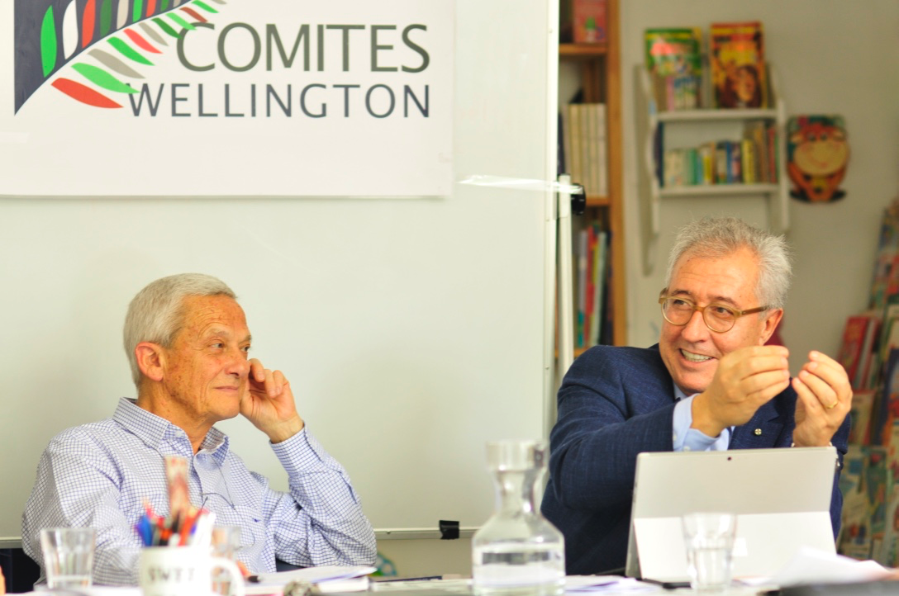
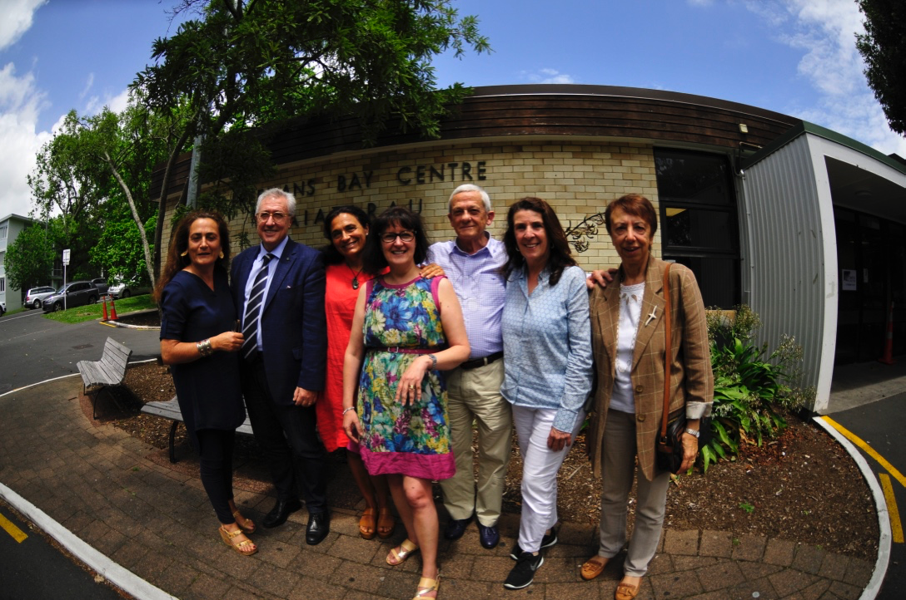

|
L'Agenzia Internazionale Stampa Estero ha pubblicato un articolo con il verbale dell'ultima riunione del ComItEs Wellington, che potrete leggere cliccando qui.  Cari Connazionali,
Vi inoltriamo la versione breve del verbale della riunione tenutasi il 31 maggio in modalità telematica via ZOOM, come prescritto dalla Procedura autorizzata il 21 aprile 2020. Come sempre potrete trovare la versione integrale del verbale sul nostro sito o cliccando qui. Buona lettura, Wilma Giordano Laryn Presidente ComItEs Wellington Verbale breve della riunione di domenica 31 maggio 2020 del Comites Wellington, tenutasi in modalità telematica via Zoom e aperta ai cittadini italiani e neozelandesi di origine italiana. Presenti anche il Dr Nicola Comi, Capo Ufficio Consolare, Ambasciata d'Italia a Wellington, e il Consigliere CGIE Prof Francesco Papandrea Emergenza COVID-19 La consigliera Alessandra Zecchini apre l’incontro con un pensiero a tutti i connazionali presenti e che seguono i comunicati del ComItEs Wellington, augurando che le proprie famiglie e amici in Italia e nel mondo stiano bene, ed un abbraccio virtuale a tutti coloro che sono stati toccati da questa tragedia. Segue un riassunto conciso delle azioni intraprese dal ComItEs durante l'emergenza, e un Q/A con il Capo Ufficio Consolare dell'Ambasciata d'Italia Dr Nicola Comi. Comi fa un aggiornamento sulla situazione, il numero degli italiani bloccati in NZ, all'inizio dell'emergenza a attualmente, le azioni intraprese dall'Ambasciata fino ad ora, ed il perché non ci sono stati voli organizzati dalla Farnesina. Comi risponde anche a domande riguardo la possibilità di voli e atti a sostegno di alloggio, assistenza, e conferma che l'Ambasciata può erogare – in via eccezionale e nei limiti del bilancio allocato - sussidi senza promessa di restituzione anche a cittadini non residenti nella circoscrizione consolare entro il 31 luglio. Infine Comi informa che gli italiani che rientrano in Italia entro il 30 giugno, e che hanno perso il lavoro all’estero, potranno richiedere subito il reddito di emergenza anche se erano iscritti all’AIRE, previa domanda all’INPS. Seguono gli interventi di supporto del Prof. Papandrea (CGIE) e del Senatore Giacobbe. Zecchini conclude questa parte del meeting con le ultime informazioni che riguardano l’estensione delle scadenze dei WHV (al momento portata a 6 mesi) per gli italiani che hanno fatto domanda e ottenuto il visto ma non possono entrare in NZ. Amministrazione Approvati all’unanimità il verbale riunione precedente, 2 febbraio 2020, il bilancio consuntivo 2019 da parte dell’Ambasciata e del MAECI, e una revisione della lettera di incarico al consulente ADDIINZ, del 24 novembre 2019. La presidente Wilma Laryn conferma che il ComItEs ha ricevuto dal MAECI l’anticipo di un terzo della somma richiesta per le spese di funzionamento del ComItEs, e informa che Il MAECI, dopo aver erroneamente dedotto il saldo attivo due volte, ha riconosciuto e corretto il proprio errore e conferma di aver messo in pagamento quanto ancora dovuto per il corrente anno. Segue la relazione sui fondi disponibili, inclusi quelli per i progetti in corso. Sospensione della chiusura dell’Incorporata Comites Nella riunione del 2 febbraio il Comites ha votato per de-registrarsi come Società Incorporata e si dà incarico alla consulente contabile di esaminare il charter dell’Incorporata e la legislazione relativa. Aggiornamento sui progetti, e previsione dei tempi di completamento di ciascuno Patronato: lo sportello di patronato per la Nuova Zelanda, collegato al Patronato Inas di Melbourne, continua la sua assistenza gratuita. Sicurezza Sociale: Il consigliere Emilio Festa informa che il consulente Carlo Tondelli ha finalizzato il ‘position paper’, in italiano e in inglese sull’Accordo di Sicurezza Sociale da inviare alle parti interessate in entrambi i paesi, e un vademecum sulle pensioni per chi si trasferisce dall'Italia alla Nuova Zelanda. I documenti verranno resi pubblici ed il ComItEs ringrazia Festa e Tondelli per il lavoro svolto. WHV: non ci sono ulteriori sviluppi da segnalare, rispetto a quelli riportati a verbale nella riunione del 2/2/2020. Archivio Digitale Documenti sull'Immigrazione Italiana in Nuova Zelanda (ADDIINZ): la consigliera Alessandra Zecchini presenta un breve rapporto sul progetto e sito. Wilma Laryn viste le incombenze del lavoro da vicepresidente prima e da presidente adesso, si dimette dal coordinamento del progetto e Zecchini viene nominata coordinatrice. Ondazzurra: la consigliera Chiara Corbelletto presenta la relazione su Radio Ondazzurra e informa che le statistiche di download sia su radio Planet FM che Podcast continuano a crescere. In seguito alla crisi COVID-19 Ondazzurra ha iniziato a produrre programmi con collegamenti Skype ed il ComItEs approva la spesa per comprare due microfoni per migliorare la qualità dell’audio. Proposta di AZ di dare una deadline per la conclusione e/o destinazione di tutti i progettiche hanno avuto finanziamenti grazie ai fondi residui MAECI: Approvato a maggioranza con voto contrario di WL. Segue il programma per la destinazione dei progetti Ondazzurra e Archivio Digitale. Riordino cartelle e documenti Google: tempistica, modalità e distribuzione di incarichi. Proposta di WL di dare incarico a persona esperta per assistenza sito web e comunicazioni Viene bocciata a maggioranza, in quanto il comitato ritiene che non si debbano spendere ulteriori fondi MAECI. Futuro del Mailchimp del Comites Il ComItEs riconosce la responsabilità della privacy riguardante i dati degli iscritti ai comunicati via Mailchimp e si consulterà con l’Ambasciata in merito. Varie ed eventuali Si decide di sottoscrivere il costo del Domain del sito ComItEs per due anni. Il Prof Papandrea (CGIE) complimenta il ComItEs Wellington per il lavoro svolto fino ad ora. Verbale breve della riunione del 2 febbraio 2020 e bollettino per gli italiani in Nuova Zelanda11/2/2020
If you like to read this in English (or other languages) click here and then click the "translate" button, top right. Cari Connazionali, Vi inoltriamo la versione breve del verbale della riunione tenutasi il 2 febbraio ad Auckland. Come sempre potrete trovare la versione integrale del verbale sul nostro sito o cliccando qui. Buona lettura, Sandro Aduso Wilma Giordano Laryn Presidente uscente Presidente entrante Verbale breve della riunione di domenica 2 febbraio 2020 e dell’AGM 2019/20 del Comites Wellington Incorporated Aperta ai cittadini italiani e neozelandesi di origine italiana Collegamento Skype con il Dr Nicola Comi, Capo Ufficio Consolare, Ambasciata Collegamento Skype con il Consigliere CGIE Prof Francesco Papandrea Amministrazione e varie Il comitato ha approvato unanimemente lo scioglimento della Società Incorporata (Comites Wellington Incorporated), non sussistendo più le ragioni per mantenerla. Le elezioni dei Comites sono state rimandate al 2021. Disappunto per la mancata consultazione o informazione a priori ai componenti del Comites. Al momento i membri hanno dato la loro disponibilità a continuare a svolgere la propria funzione all'interno del Comites Wellington. Il Presidente Sandro Aduso, a causa di intensi impegni di lavoro, ha presentato le proprie dimissioni dalla carica. Il Comites ha accettato le dimissioni, ed ha eletto alla presidenza l’attuale Vicepresidente, Wilma Giordano Laryn. Ha poi eletto Aduso alla carica di Vicepresidente. I membri del Comites hanno tenuto a sottolineare la fondamentale attività svolta dal Presidente uscente nell’avviare il primo Comites della Nuova Zelanda. Il Comites ha espresso parere favorevole a che la riunione della commissione Continentale Anglofona Paesi Extraeuropei del CGIE si svolga ad Auckland dal 1 al 3 maggio. Il Comites, a seguito delle dimissioni dell’Assistente Amministrativa Alessandra di Marco, ha approvato di affidare alla Dr.ssa Paola Mastria, commercialista residente a Christchurch, l’incarico di curare i bilanci Comites. Aggiornamento Progetto Accordo su Pensioni e Sicurezza Sociale Il Comites ha approvato il “position paper” preparato dal consulente Comites Dr Carlo Tondelli (in collegamento telematico), commentando positivamente la chiarezza della presentazione e il dettaglio delle problematiche legate ai diversi sistemi pensionistici e alle leggi che regolano la corresponsione di pensioni maturate nei due paesi. Aggiornamento Progetto WHV Ci è stata inoltrata dal Sen Giacobbe una lettera del Ministro di Maio del 29/11/2019, in cui, in risposta a sollecitazione presentata dal Senatore in appoggio alla nostra proposta di modifica, informa che un nuovo testoconforme alle nostre richieste è stato inoltrato alla controparte neozelandese. Prevedendo l’estensione fino a 12 mesi del periodo di lavoro presso un unico datore, il nuovo Accordo necessiterà di un’autorizzazione alla ratifica da parte del Parlamento italiano. Varie ed eventuali È stata fissata al 29 marzo 2020 la data del referendum confermativo previsto dall'articolo 138 della Costituzione sul testo di legge costituzionale recante: "Modifiche agli articoli 56, 57 e 59 della Costituzione in materia di riduzione del numero dei parlamentari". Gli elettori iscritti sull’elenco fornito dal Ministero dell’Interno riceveranno dall’Ambasciata il plico elettorale per posta. Bollettino per gli italiani in Nuova Zelanda Referendum 2020: Informazioni per elettori temporaneamente in Nuova Zelanda (non iscritti AIRE) Gli elettori italiani che per motivi di lavoro, studio o cure mediche si trovino temporaneamente all’estero, per un periodo di almeno tre mesi, nel quale ricade la data di svolgimento del referendum popolare confermativo (29 marzo 2020) della legge costituzionale in materia di riduzione del numero dei parlamentari, nonché i familiari con loro conviventi, potranno esercitare il diritto di voto per corrispondenza (art. 4-bis, comma 1, legge 459 del 27 dicembre 2001), ricevendo il plico elettorale contenente la scheda per il voto all’indirizzo di temporanea dimora all’estero. Per esercitare il proprio diritto di voto per corrispondenza, tali elettori dovranno far pervenire AL COMUNE d’iscrizione nelle liste elettorali un’apposita opzione entro il 26 febbraio 2020. Cliccare qui per maggiori informazioni. Canti di Consolazione: quattro concerti in Nuova Zelanda L'ambasciata annuncia quattro concerti con Tessa Romano (mezzo-soprano), Luca Manghi (flauto), e Dylan Lardelli (Chitarra). Musica di: Monteverdi, Mortari, Berio, Castelnuovo-Tedesco, Dylan Lardelli, e Chris Gendall. Date e città: 8 marzo, Christchurch 15 marzo, Auckland 21 marzo, Wellington 22 Marzo, Dunedin Raffaello Sanzio - 500esimo anniversario L'Ambasciata di Wellington, in collaborazione con l'Università di Auckland, ha organizzato una conferenza su Raffaello Sanzio con Costantino D'Orazio. Cliccare qui per maggiori informazioni. Cari Connazionali, Vi inoltriamo la versione breve del verbale della riunione tenutasi il 24 novembre ad Auckland. Come sempre potrete anche trovare la versione integrale del verbale sul nostro sito, o cliccando qui. A nome mio e di tutti i membri dei comitato, voglio anche cogliere l'occasione per augurare a tutti voi di passare un buon Natale, e che il 2020 sia per tutti un anno prospero e sereno. Sandro Aduso Presidente Amministrazione Il comitato ha approvato unanimemente:
L’Ambasciata ci ha informato il 24 ottobre 2019 che, in risposta alle nostre richieste di fondi integrativi, ci sono stati assegnati i seguenti fondi: NZD 4.600 per Ondazzurra e NZD 1.225 per progetto ADDII. Il Comites coglie l’occasione per riconoscere l’importanza dei contributi MAECI, che hanno permesso di portare avanti i progetti in corso. L’ Ambasciatore ci ha informati che nessuna notizia riguardo le elezioni Comites 2020 è ancora pervenuta. Pensioni-sicurezza sociale (progetto Comites) – Aggiornamento su proposta di un Accordo Il consulente Comites Dr Carlo Tondelli ha presentato un riepilogo dell’analisi effettuata delle modifiche intervenute nei sistemi pensionistici di Italia e NZ nel periodo 1998-2019. Ha dettagliato la stima dei potenziali effetti di un Accordo simile a quello del 1998 se applicato nella situazione attuale, e degli effetti di possibili modifiche. Il Comites si e` dichiarato soddisfatto del lavoro svolto, e in accordo con l’approccio suggerito per la forma finale dei documenti. Il Comites ha approvato all’unanimità di rinnovare il contratto al Dr Tondelli. Archivio Digitale Documenti Immigrazione Italiana (progetto Comites ADDII) – Aggiornamento Il Comites ha approvato all’unanimità di affidare all’esperto IT Alessio Marcheggiani, che in varie occasioni ha dato volontariamente il proprio supporto al progetto nelle sue diverse fasi di sviluppo, l’incarico di consulenza per: inserimento dati, tutoring attraverso inserimento dati insieme a membri Comites, eventuali miglioramenti delle pagine, e programmare e realizzare la diffusione dell’esistenza dell’Archivio ad enti potenzialmente interessati: università, ambasciate, centri di ricerca, fondazioni e simili, in tutto il mondo. Work Holiday Visa (progetto Comites): Aggiornamento su modifica accordo A seguito della lettera inviata il 7 settembre ai Parlamentari, Ambasciata, CGIE e MAECI, il Comites ha ricevuto due messaggi in risposta. Il Senatore Francesco Giacobbe, eletto per la circoscrizione estero di cui fa parte la Nuova Zelanda, ha contattato personalmente il nuovo Ministro del Lavoro (Sen. Nunzia Catalfo) ed il nuovo Ministro degli Affari Esteri (On. Luigi Di Maio) per portarli a conoscenza dei due progetti che il Comites sostiene. Ha anche informato l’Ambasciatore della Nuova Zelanda in Italia (S.E. Anthony Simpson). Il Dr Carmelo Barbarello, precedente Ambasciatore d’Italia a Wellington, e presentemente Consigliere Diplomatico al Ministero del Lavoro, ha scritto informando che il Ministero ha dato il suo assenso all’abolizione dei 3 mesi massimi di lavoro per un singolo datore, ed anche all’abolizione del tetto agli ingressi; per l’Accordo previdenza sociale: il MLPS si è detto disponibile a lavorare per superare lo stallo. L’Ambasciatore ha anche informato di recenti incontri a Roma Aggiornamenti sul progetto Comites “Valorizzazione dell’italianità in NZ” e su Radio Ondazzurra sono disponibili sul verbale Integrale. Verbale breve della riunione di sabato 7 settembre 2019
Aperta ai cittadini italiani e neozelandesi di origine italiana. Collegamento Skype con il Dr Nicola Comi, Capo Ufficio Consolare e Incaricato d’Affari, in rappresentanza dell’Ambasciata d’Italia a Wellington Come sempre potrete anche trovare la versione integrale del verbale sul nostro sito, o cliccando qui In calce al verbale integrale potrete anche trovare i riepiloghi dei progetti Sicurezza Sociale e WHV. Vi ricordiamo che, se desiderate, potrete incontrare il ComItEs al Festival Italiano, Auckland 20 ottobre, dalle 11:00 alle 16:00. Amministrazione: Il comitato ha approvato unanimemente il verbale della riunione del 4 agosto 2019. Il comitato ha anche approvato unanimemente il bilancio preventivo 2020. Il ComItEs ha preso atto con rammarico dell’annuncio delle dimissioni, nei primi mesi dell’anno prossimo, dell’Assistente Amministrativa, e ha manifestato la propria gratitudine per il dedicato lavoro di questi anni. Pensioni-sicurezza sociale (progetto Comites) Aggiornamento su proposta di un Accordo: Secondo quanto il ComItEs ha deciso nella riunione del 4 agosto, è stato offerto un incarico al Dr Carlo Tondelli per una consulenza volta a compilare la bozza di accordo che costituisce la proposta Comites. La bozza verrà inviata all’Ambasciata, che la userà per avviare le trattative tra i due Paesi. La consulenza, della durata di sei mesi, prevede un compenso di $2000, da attingere ai fondi speciali che il MAECI ci ha assegnato per questo progetto. Work Holiday Visa (progetto Comites): Aggiornamento su modifica accordo Il Dr Comi ha informato che il 23 agosto l’ufficio negoziatore del MAECI ha inviato all’Ambasciata una prima bozza negoziale, sulla quale l’Ambasciata ha fornito alcuni input. Quando l’Ufficio negoziatore invierà la bozza definitiva, l’Ambasciata la presenterà alle controparti presso il Ministero degli Esteri neozelandese. Ricordiamo che lo scopo della modifica è di portare il periodo di tempo con un unico datore di lavoro dagli attuali tre mesi a dodici mesi. Il ComItEs ha approvato all’unanimità di inviare una lettera all’Ambasciata, e alle parti politiche e ministeriali di referenza, in cui si riassumono i due progetti (WHV e Sicurezza Sociale), e si sollecita il supporto attivo di tutte le parti. Potrete trovare una copia della lettera allegata al verbale integrale. Presenza Comites al Festival Italiano (Auckland, 20 ottobre). E` stato deciso un turno di presenze al tavolo ComItEs al Festival. Si preparerà un volantino contenente informazioni per i connazionali sul ComItEs e le sue attività, e le informazioni sulle prossime elezioni ComItEs, se disponibili dall'Italia entro il 20 ottobre. Riunione Commissione CGIE dei Paesi Anglofoni in Nuova Zelanda. Siamo stati informati dal Prof Papandrea che, per motivi fuori dal controllo del CGIE, la proposta riunione è stata posposta a data da destinarsi. Il ComItEs ringrazia il Prof Papandrea, e le persone ad Auckland che si sono adoperate per l’organizzazione preliminare dell’evento.
Cari Connazionali, Vi inoltriamo l'agenda per la prossima riunione ComItEs Wellington, che si terrà il 7 settembre 2019 ad Auckland, e la versione breve del verbale della riunione tenutasi il 4 agosto, seguito da un breve bollettino di informazioni per gli italiani in Nuova Zelanda. Come sempre potrete anche trovare la versione integrale del verbale sul nostro sito, o cliccando qui. Buona lettura, Sandro Aduso Presidente ComItEs Wellington Inc. Agenda per la prossima riunione del ComItEs Wellington Aperta ai cittadini italiani e neozelandesi di origine italiana Data: sabato 7 settembre 2019, ore 16:30 -18:00 Luogo: Società Dante Alighieri Auckland, Freemans Bay Community Centre, 52 Hepburn St, Ponsonby, Auckland L' agenda prevede:
Verbale breve della riunione ComItEs Wellington del 4 agosto 2019 Amministrazione: Il 7 giugno 2019 il MAECI ci informa, tramite l’Ambasciata che, dopo l’anticipo che avevamo già ricevuto, non elargiranno ulteriori fondi per il capitolo 3103 (spese di funzionamento Comites) per l’esercizio finanziario 2019 grazie ai nostri avanzi di bilancio dall’anno passato pari a quanto ci sarebbe dovuto arrivare del rimanente finanziamento per il 2019. II 26 luglio 2019 l’Ambasciata ci ha trasmesso una comunicazione MAECI riguardo la disponibilità di fondi sul cap. 3103/2019 per finanziare specifiche iniziative. Il Comites invierà richieste per due dei progetti in corso, entro il termine del 9 settembre. L’interazione tra il nostro Comites ed il CGIE (Consiglio Generale degli Italiani all’Estero) è significativamente aumentata, soprattutto a causa della disponibilità del Prof Papandrea, che ci rappresenta nel CGIE e si fa portavoce delle nostre istanze. Dall’Assemblea Plenaria CGIE che si à tenuta dall’1 al 5 luglio u.s. Il Prof Papandrea ci ha riportato che: “La Commissione Anglofona ha rilevato alcune questioni tecniche, come la sollecitazione alle autorità italiane di concludere accordi con Australia, Canada, Nuova Zelanda e Stati Uniti per il reciproco riconoscimento delle patenti di guida; il rilascio della carta d’identità elettronica agli italiani fuori dall’Europa; e la richiesta che l’Italia si adoperi a trattare aggiornamenti degli attuali accordi Working Holiday Visa con il Canada e con la Nuova Zelanda che prevedano le stesse condizioni e gli stessi termini concessi ad altri Paesi Europei.” Il ComItEs ha pertanto deciso di rimettere la reciprocità patenti di guida fra i progetti. Wilma Laryn sarà coordinatrice del progetto Reciprocità patenti di guida nei Paesi Anglofoni. Il mandato di questo ComItEs si conclude nell’aprile 2020. In attesa di conferma delle elezioni, ricordiamo ai cittadini italiani in NZ interessati a candidarsi a far parte del nuovo ComItEs che, almeno secondo la normativa delle scorse elezioni, devono presentarsi in una lista di almeno 12 candidati, che ciascuna lista deve essere sostenuta da almeno altri 100 firmatari, tutti iscritti all’AIRE, e che sia la creazione di una lista che la raccolta firme potrebbero richiedere tempo. L’ambasciata fornirà tutte le direttive; nel frattempo si può consultare l’articolo 14 della normativa https://www.esteri.it/mae/doc/dpr395.pdf riguardante la presentazione delle liste dei candidati. Il ComItEs ha discusso come promuovere le prossime elezioni, quando verranno confermate, e come sollecitare la presentazione di liste, anche tramite programmi di Ondazzurra. Work Holiday Visa: Aggiornamento su modifica accordo, in modo che sia possibile lavorare per lo stesso datore di lavoro per sei mesi invece che i tre mesi permessi al momento Il Prof. Papandrea ha rilevato la proposta con il capo dell’ufficio competente (Cons. Giovanni De Vita) della Direzione generale per gli italiani all’estero e le politiche migratorie (DGIEPM). Il Cons. De Vita ha indicato che sarebbe disposto a perseguire la possibilità con il Ministero del lavoro su richiesta dell’ambasciatore Marcelli. L’Ambasciatore ha successivamente informato che la parte neozelandese richiede reciprocità. Il Comites intende approfondire la situazione della reciprocità e le esistenti eccezioni a questa. Pensioni-sicurezza sociale - Aggiornamento: A richiesta del ComItEs il Dott. Carlo Tondelli si è attivato lavorando allo studio e stesura di un possibile accordo tra Italia e Nuova Zelanda, partendo dall’esame della vecchia bozza di trattato del 1998 e mai firmato tra i due Paesi, e dalle due diverse realtà che rendono Italia e Nuova Zelanda non facilmente accomunabili in termini di Sicurezza Sociale. Sono stati evidenziati 3 punti particolarmente importanti: 1) Evitare l'iniquità di trattamento in NZ tra pensioni erogate ai cittadini italiani da enti pubblici (cumulate e poi decurtate dalla SA) e pensioni di altra origine (non cumulabili). 2) Garantire che i contributi versati dai lavoratori di entrambi i paesi possano essere trasferiti al fine di preservare i diritti acquisiti e non perdere anni lavorati in un paese solo perché ci si è trasferiti in un altro. 3) Verificare e armonizzare anche gli aspetti fiscali dei trattamenti pensionistici per i cittadini che nell'arco della loro vita lavorativa sono stati attivi in entrambi i Paesi. Archivio Digitale Documenti Immigrazione Italiana in NZ - Aggiornamento e richiesta fondi integrativi: Le pagine dedicate all’archivio digitale sono state modificate e caricate sul nuovo sito Immigrazione italiana in Nuova Zelanda - Archivio Digitale. Il ComItEs ha approvato all’unanimità una richiesta di fondi residui CAP. 3103/2019, alla voce “studi specifici sull'emigrazione italiana”, di NZ$2.560 (€1.500), per continuare il progetto ed inserire le voci mancanti. Programma radio Ondazzurra - Aggiornamento e richiesta fondi integrativi: Ondazzurra prosegue la produzione settimanale dei programmi e l’archivio podcast ha attualmente 140 puntate. L’ascolto in rete continua a crescere ed ha raggiunto 15,400 download. Si ricorda a tutti di segnalarci persone da intervistare per Ondazzurra. Il ComItEs ha approvato all’unanimità una richiesta di fondi residui CAP. 3103/2019 per ”Fondi Integrativi per il finanziamento di iniziative a favore della comunità italiana” di NZ$4,600, pari a quello richiesto e ricevuto l’anno precedente. Aggiornamento sull’insegnamento dell’italiano nelle scuole: Gabriella Brussino aveva annunciato la creazione da parte sua per l’Università di Auckland di un corso per principianti in versione blended learning (parte in classe e parte online, attraverso un'app). Il pilota del corso è stato offerto nel primo semestre 2019 a 50 iscritti ed è attualmente frequentato da altri 50 studenti. Inoltre questo corso potrebbe favorire l’inserimento della lingua italiana nelle scuole offrendolo anche agli studenti di Year 13 attraverso il canale Young Scholars, che permette agli allievi dell’ultimo anno di liceo di frequentare un corso universitario ed ottenere dei crediti. Patronato INAS NZ e sportello CAF - Aggiornamento Lo sportello neozelandese del Patronato Inas, che cura anche l’accordo col CAF, continua ad essere a disposizione di utenti a titolo gratuito. Le prestazioni fornite di recente coprono un largo spettro di richieste: pensioni, accertamento redditi, esistenza in vita, iscrizione AIRE, doppia tassazione. BOLLETTINO PER GLI ITALIANI IN NUOVA ZELANDA Nuova tassa per visitare la Nuova Zelanda Dal 1 ottobre 2019 coloro che desiderano visitare la Nuova Zelanda per un breve periodo dovranno richiedere un NZeTA (New Zealand Electronic Travel Authority) prima di viaggiare. Il costo è NZD $9 sulla App o NZD $12 se completato online. NZeTA mobile apps:NZeTA app — Apple Store NZeTA android app — Google Play Sarà anche introdotta la tassa International Visitor Conservation and Tourism Levy (IVL) di NZD $35 per WHV, turisti, e per alcuni tipologie di student visa e work visa, da pagare con la NZeTA. Per maggiori informazioni cliccare qui. Concerto di piano ad Auckland con Alessandro Marangoni La Società Dante Alighieri di Auckland in collaborazione con l'Ambasciata d'Italia a Wellington, l'Istituto di Cultura a Sydney e CIDIM – Comitato Nazionale Italiano Musica, presenta un concerto di piano con Alessandro Marangoni invitolato Rossini & Chopin: un dialogo romantico. Venerdì 6 settembre, alle 18:00 (si prega di arrivare per le 17:50) St Matthew in the City, 187 Federal St, Auckland 1010 Entrata libera con prenotazione a info@dante.org.nz Per maggiori informazioni cliccare qui. Ad Auckland un evento dedicato ai vini italiani del paese Sabato 31 agosto Sapori d’Italia presenterà al Royal New Zealand Yacth Squadron Vino Italiano, un evento per conoscere 150 vini da tutta Italia, con assaggi illimitati di vino accompagnati da prodotti italiani importati da Mediterranean Foods, quattro masterclasses, e con la partecipazione di 16 rappresentanti di case vinicole. Per maggiori informazioni, e per prenotare, cliccare qui. Il Festival Italiano ritorna ad ottobre Festival Italiano, l'evento italiano più grande del paese organizzato dalla Dante Alighieri di Auckland si celebrerà a Newmarket, Auckland, domenica 20 ottobre. Quest'anno il Festival includerà anche Teed St oltre a Kent St, Osborne St, Lumsden Green e Rialto Centre, per far fronte al sempre crescente numero di visitatori. La stagione italiana di Auckand inizierà il 6 Settembre e includerà diversi eventi italiani in città, concludendosi alla fine della Settimana della Lingua Italiana nel Mondo il 27 ottobre. Attività della Dante di Christchurch La Società Dante Alighieri di Christchurch organizza numerosi eventi sociali come colazioni, proiezioni di film italiani, un book club e anche Giochiamo a carte, un Italian Card Club per quattro domeniche: 8 e 22 settembre e 6 e 13 ottobre. Aldo Cuccurullo Memorial Trophy Football Game Per chi è a Wellington: la partita di calcio fra il Club Garibaldi ed il Club Italia si svolgerà il 9 novembre, orario e luogo da confermare. Per maggiori informazioni visitare il sito http://www.clubgaribaldi.org.nz/ Ciao Italia in una nuova sede a Christchurch L'evento Ciao Italia, organizzato dalla Italian Chamber of Commerce in New Zealand, ritorna a Christchurch sabato 23 Novembre dalle 10.00 alle 16.00 e si terrà presso lo storico Arts Center in Worcester St, interamente restaurato dopo il terremoto. L'evento sarà in concomitanza con la settimana della Cucina Italiana nel mondo. Per maggiori informazioni contattare ciaoitaliach@gmail.com Oppure Sabrina Sparano +64284299644 Cecilia Zambrini +642108292059 Cinema Italiano Festival, tutti i prossimi appuntamenti Continua il tour di Cinema Italiano in Nuova Zelanda, i prossimi appuntamenti saranno: Arrowtown 21 -25 August Whakatane 3 - 8 Sept Matakana 6 - 14 Sept Cambridge 10 - 15 Sept Taupo 13 -19 Sept Auckland 17 Sept - 30 Sept Wellington 6 - 18 November New Plymouth 8 - 14 Nov Waiheke 9 -15 January 2020 Gruppo LinkedIn per Italiani in Nuova Zelanda Per chi vive in Nuova Zelanda e desidera conoscere connazionali e business italiani su LinkedIn il ComItEs Wellington informa che è stato creato il gruppo Professionisti Italiani in Nuova Zelanda. NEW!! TO READ THE BRIEF MINUTES AND BULLETIN IN ENGLISH (OR OTHER LANGUAGES) JUST CLICK HERE AND THEN CLICK 'TRANSLATE' ON THE TOP LEFT.
Cari Connazionali, Vi inoltriamo la versione breve del verbale della riunione tenutasi il 31 marzo ad Auckland. Come sempre potrete anche trovare la versione integrale del verbale sul nostro sito, o cliccando qui. Buona lettura, Sandro Aduso Presidente ComItEs Wellington Inc. Riunione ComItEs Wellington 31 marzo 2019 Aperta ai cittadini italiani e neozelandesi di origine italiana Collegamento Skype col Dr Nicola Comi, Capo Ufficio Consolare e Incaricato d’Affari, Ambasciata d’Italia a Wellington Verbale Breve Le riunione si è aperta con la lettura del comunicato stampa spedito all'AISE il 15 marzo a seguito dell'attentato terroristico a Christchurch, dalla lettura della lettera di cordoglio spedita il 16 marzo alla comunità musulmana di Christchurch, e della loro risposta (corrispondenza inclusa nel verbale integrale). La raccolta fondi avviata dal Comites e dalla Dante di Auckland in occasione del recente concerto operistico ha contribuito $417, che verranno versati sul fondo di sostegno per le famiglie delle vittime. Amministrazione: Il comitato ha approvato unanimemente il verbale della riunione del 2 dicembre 2018. L’Ambasciata ha trasmesso l’anticipo di Euro1,438.00 del finanziamento ordinario assegnato per l'esercizio finanziario 2019 (la totale richiesta è di euro 3,518). Inoltre, al riguardo del Preventivo per l’anno 2020 (e futuri fondi operativi per tutti i 101 ComItEs nel mondo), abbiamo ricevuto una copia del comunicato dell’InterComites Australia, tenutosi a Perth il 23 marzo scorso, il quale ci informa che nell’ultima legge di bilancio non sono stati confermati gli stanziamenti precedentemente previsti per il funzionamento ed i progetti del ComItEs con un deficit di circa un milione di euro e che pertanto ciò ha determinato, in pratica, il dimezzamento del finanziamento di ogni singolo Comitato. Riduzione delle mansioni della Segretaria Amministrativa. Si informa della nuova distribuzione di mansioni ComItEs come segue: comunicazioni interne ed esterne: Alessandra Zecchini; agende e verbali: Wilma Laryn, documentazione bilanci e amministrazione: Alessandra Di Marco (segretaria amministrativa Comites). Sono state approvate e messe agli atti due lettere: alla Dante di Auckland per ringraziare per l’ospitalità offerta alle riunioni ComItEs nel 2018, e rinnovata per il corrente anno 2019; a Fabrizio Venturini, vicepresidente di Nomit e responsabile dello “Sportello Welcome” attivo presso il Consolato Generale d’Italia a Melbourne, perché porti la voce del Comites Wellington alla Conferenza Giovani Italiani a Palermo in aprile, e in particolare su due progetti in corso riguardanti: la modifica dell’accordo WHV, e l’accordo di sicurezza sociale e pensionistico tra Italia e Nuova Zelanda. Work Holiday Visa - Aggiornamento L’accordo per portare il WHV ad almeno 6 mesi di lavoro presso lo stesso datore è in fase negoziale. Il Dr Comi informa dei passi che l’Ambasciata sta intraprendendo per sostenere l’aggiornamento dell’accordo. L’eventuale procedura per la revisione sembra piuttosto complessa per quanto riguarda la parte italiana, dovendo l’accordo essere bilaterale, e prevede il passaggio per il Parlamento italiano. Pensioni-sicurezza sociale - Aggiornamento E` stato recentemente ripreso il contatto con la Prof Silvia Borelli la quale si rende ancora disponibile a collaborare al progetto, ma con tempi non brevi in quanto impegnata come docente universitaria. Si è deciso di destinare un tetto di $3,000 (dei $4,000 che ci sono stati stanziati dal MAECI come fondi straordinari) incluso iva per il lavoro che potrebbe svolgere. ADDII-NZ - Aggiornamento La società Litosoft ha presentato il 25 febbraio il lavoro svolto in relazione alle pagine contenenti l’archivio digitale dei documenti sull’immigrazione italiana in Nuova Zelanda. Le pagine, create con MyWikis, verranno unite da link al sito ComItEs. Si è deciso di pagare l'host per due anni con una spesa di $50 all'anno. La fattura presentata da Litosoft per questa parte del lavoro è di $3,014.69. Programma radio Ondazzurra - Aggiornamento L’archivio podcast di Ondazzurra ha adesso più di 125 puntate e anche durante i mesi estivi l’ascolto è stato molto attivo. In previsione dei possibili tagli ai finanziamenti per l’editoria, annunciati nell’ultimo bilancio del governo italiano, la ricerca di eventuali finanziamenti aggiuntivi ha ottenuto un contributo di $2,000 dalla Società Dante Alighieri di Auckland . Patronato INAS NZ e sportello CAF - Aggiornamento Lo sportello neozelandese del Patronato Inas, che cura anche l’accordo col CAF, continua ad essere a disposizione di utenti a titolo gratuito. Le prestazioni fornite di recente coprono un largo spettro di richieste. Esistenza in vita. L’INPS ha messo un brevissimo video su Youtube, in cui si dice ai pensionati italiani all’estero di “farsi vivi”, in relazione alla certificazione di esistenza in vita. Tale istruzione riguarda anche i pensionati in NZ: https://www.youtube.com/watch?time_continue=105&v=ka1_Qd2PSLg Riunioni 2019. Sono state fissate le date per le prossime riunioni in seduta plenaria nel 2019: le domeniche del 4 agosto e del 1 dicembre. A seconda sella necessità si convocheranno due altri incontri brevi. BOLLETTINO PER GLI ITALIANI IN NUOVA ZELANDA Nuovo Console Onorario as Auckland Bernadette Luciano ha terminato il suo mandato come Console Onorario ad Auckland. Bernadette, che è stata Console dal 2015, è Associate Dean International per la Faculty of Arts dell’Università di Auckland e Head of the School of Cultures, Languages and Linguistic presso la stessa Università. Il ComItEs Wellington ringrazia Bernadette per tutto il lavoro svolto a sostegno della comunità italiana di Auckland e delle città vicine negli ultimi 4 anni. Grazie di tutto Bernadette!! 💐 Cogliamo l'occasione per dare il benvenuto alla nuova Console, Lindsey Jones (in foto). Per la rilevazione delle impronte digitali e altre funzioni del consolato si potranno richiedere appuntamenti per i giorni di martedì e giovedì tra le 13:00 e 17.30. Office/Ufficio: 28 Marine Parade, Herne Bay, Auckland, 1011 Tel.+64 (0)27 4715 057 L'indirizzo email del Consolato di Auckland rimarrà invariato ed è: auckland.onorario@esteri. Seminario per gli italiani interessati al visto di residenza per Skilled Migrant Elena Bollino, agente d'immigrazione per Apollo Immigration, presenterà un seminario dedicato al visto di residenza Skilled Migrant Category. Il seminario verterà su: - Requisiti richiesti - Calcolo dei punti - Processo di richiesta Nell'ultima parte del seminario sarà possibile fare domande sugli argomenti trattati. Coloro che parteciperanno al seminario avranno uno sconto di NZ$30 sulla prima consultazione. Ricordiamo a tutti coloro che sono interessati a partecipare al seminario di acquistare il biglietto di NZ$15 entro il 14 aprile 2019. Vi preghiamo di cliccare su "Get Tickets" per pagare con carta di credito o debit card. Monday, April 15, 2019 at 12:30 PM – 2:30 PM Grey Lynn Community Centre Auckland Importante: Non sarà possibile acquistare i biglietti all'evento o il giorno dell'evento. Per maggiori informazioni consultare la pagina Fb dell'evento cliccando qui. Giochiamo insieme in italiano Programma per bambini sponsorizzato dalla Dante Alighieri di Auckland. Potrete trovare ulteriori informazioni su questo corso e su altre attività della Dante Auckland nella newsletter mensile della società. Newsletter di Aprile Tutte le Newsletter Notizie dalla Italian Chamber of Commerce in New Zealand (ICCNZ) La Camera di Commercio Italiana in Nuova Zelanda (Italian Chamber of Commerce of New Zealand) ha un nuovo Presidente: Andrea Manni, residente ad Auckland. I Vice Presidenti sono Silvia Cesari, Vito Lo Iacono e Marco Canegallo, i Consiglieri sono Glenn Eie, Katherine Anderson, Michele Passarello, Ricardo Deiana, David Thomas and Carolina Izzo; il Segretario Generale è Marco Giordano. Potete leggere i profili del nuovo comitato cliccando qui. Da parte del ComItEs Wellington congratulazioni a tutti e buon lavoro! Concerto italiano a Christchurch per celebrare la Festa della Repubblica Per maggiori informazioni cliccare qui. Cari Connazionali, Vi inoltriamo la versione breve del verbale della riunione tenutasi il 2 dicembre ad Auckland, con la partecipazione del Senatore Francesco Giacobbe e il collegamento telematico con l’Ambasciata. Come sempre, troverete la versione integrale del verbale alla pagina Documenti, o semplicemente cliccando qui. Buona lettura, Sandro Aduso Presidente ComItEs Wellington Inc.  foto: Alessio Marcheggiani Verbale Breve della riunione di domenica 2 dicembre 2018 e dell’AGM 2018 Aperta ai cittadini italiani e neozelandesi di origine italiana Con la partecipazione del Senatore Francesco Giacobbe Amministrazione: il comitato ha approvato unanimamente il verbale della riunione del 9 settembre 2018, e il bilancio consuntivo 2018. Risultati del bando per consulenza IT per migliorare l’archivio digitale sull’immigrazione italiana (progetto ADDII-NZ) realizzando un motore di ricerca interno ed introducendo altre funzionalità: la selezione dei candidati che hanno risposto al bando si conclude con votazione unanime sulla scelta della Società Litosoft Ltd, secondo la proposta presentata da Desirée Armato e Fabio Cigliano, che lavoreranno congiuntamente sul progetto. Il Comites ha anche approvato la spesa per un hosting separato, dedicato alle pagine sull’immigrazione. I fondi per questo progetto sono stati concessi dal MAECI come fondi straordinari. Elezioni ComItEs 2020: abbiamo richiesto all’Ambasciata e al CGIE di contattarci non appena si riceveranno informazioni sulla data e modalità delle stesse, così da poterle passare per tempo ai connazionali per facilitare la creazione di possibili liste di candidati. Intervento Senatore Francesco Giacobbe, senatore della Repubblica Italiana per la Circoscrizione Asia-Africa-Oceania-Antartide dal 2013 e Segretario della 3° Commissione Permanente (Affari Esteri). La Commissione è competente per l'esame dei disegni di legge di autorizzazione alla ratifica di trattati internazionali, nonché dei disegni di legge in materia di politica estera e di quelli afferenti le competenze del MAECI. Dopo aver ringraziato il Comites per l’ospitalità e aver complimentato il Comites per l’impegno, la serietà e l’organizzazione, il senatore procede ad una breve introduzione personale. La lunga residenza in Australia gli ha permesso di portare una prospettiva estera all’interno del Parlamento italiano, in particolare, il concetto che gli italiani all’estero sono una risorsa, piuttosto che una spesa, in quanto ambasciatori volontari del Made in Italy nel mondo. Inoltre è essenziale coltivare la lingua e la cultura italiana all’estero. Sul Work Holiday Visa (progetto Comites): l’accordo per portare il WHV ad almeno 6 mesi di lavoro presso lo stesso datore è in fase negoziale (la richiesta del ComItEs Wellington è sempre stata di 12 mesi) e sembra che ci sia una possibilità d’intesa tra i due paesi. Seguiremo con attenzione la trattativa necessaria per finalizzare l’accordo. Se sarà necessario il passaggio parlamentare, si spingerà per la ratifica. Pensioni: il senatore ha vasta esperienza in merito, e si rende disponibile ad approfondimenti sulla materia. Infine, un invito a riflettere su tre punti:
PROGETTI Patronato in Nuova Zelanda – Sportello INAS NZ Il Patronato Inas ha firmato una convenzione con il CAF (Centro Assistenza Fiscale della CISL) per attività fiscale a favore dei residenti all’estero per quanto riguarda tre fattispecie di prestazioni: - Dichiarazione di Successione - Elaborazione/calcolo IMU-TASI - Dichiarazione dei Redditi (con Modello Redditi, ex Unico). L’accordo prevede la cooperazione tra gli operatori delle sedi dell’INAS all’Estero, l’INAS Nazionale e il CAF Nazionale per lo scambio di informazioni e l’inoltro della documentazione necessaria a quest’ultimo per le dichiarazioni e le elaborazioni su indicate, inclusi i pagamenti che il cittadino deve eseguire. Dettagli del modus operandi tra il cittadino, lo sportello Inas ed il CAF sono presentati in questo power point e sono reperibile sul sito https://www.cafcisl.it/. Per quanto riguarda il costo di tale assistenza, l’utente verrà informato della spesa in anticipo e, se tale spesa è accettata, l’utente riceverà la relativa fattura dal CAF; la parte di lavoro svolta dall’Inas rimarrà gratuita. Per quanto riguarda problemi legali derivanti da contestate emergenze mediche in Italia, non esiste niente di formale, ma le persone interessate possono sempre rivolgersi all’Inas (sia in Italia che in Nuova Zelanda) che consiglierà, caso per caso. Un aggiornamento sull’attività dello Sportello INAS NZ è disponibile nel Verbale Integrale. Pensioni / Sicurezza Sociale Non ci sono sviluppi da segnalare, ma si sta procedendo con la ricerca di consulenti legali per preparare un documento bilingue che illustri l’analisi portata avanti dal Comites in questo riguardo. Valorizzazione dell’italianità in NZ Il ComItEs ha dato supporto ad un numero di eventi italiani, in particolare ad Auckland, con uno stand al Festival Italiano 2018 per il ComItEs e uno per Radio Ondazzurra. Inoltre i Comitesinisono stati presenti ai numerosi eventi organizzati dalla Dante Alighieri, e al Made In Italy Expoorganizzato da ICCNZ. Notizie riguardanti questi ed altri avvenimenti italiani, come La Settimana della Cucina Italiana nel Mondo organizzata dall'Ambasciata, sono state diffuse sia in rete che in comunicati stampa, ripresi anche dall'AISE, e aggiunti ai nostri comunicati agli italiani via Mailchimp, nonchè in una intervista sulla rivista Ponsonby News, rivista gratuita di Auckland con 74mila lettori. Programma radiofonico Ondazzurra Ondazzurra prosegue regolarmente le trasmissioni settimanali. L’ascolto in podcast continua a crescere e sommando i due canali dei quali abbiamo le statistiche, Planet FM e PodBean, ha superato i 10,000 downloads. Durante il mese di gennaio verranno mandate in onda una serie di repliche. VARIE ED EVENTUALI Il pubblico presente ha sollevato il problema del sostegno per i nuovi arrivati, soprattutto i giovani, che spesso arrivano con poche informazioni. Sara Avantaggiato, in rappresentanza dell’ambasciata in collegamento telematico, ha fatto notare che il sito dell’ambasciata offre ampie informazioni usufruibili in materia, così come la pagina Facebook e l’acconto Twitter. Riporterà all’Ambasciata la richiesta di maggiori informanzioni per i nuovi arrivati, che pervengano sia direttamente che tramite il Comites. Il calendario riunioni 2019 verrà steso e pubblicizzato dopo la consueta sosta estiva di gennaio e febbraio. Auguri di Buone Feste In chiusura di questa 19ma riunione, il Comites invia agli italiani in Nuova Zelanda e al Senatore Giacobbe gli auguri di buone feste natalizie con i vostri cari ed un felice e prospero 2019.  foto: Alessio Marcheggiani  Cari Connazionali, Vi inoltriamo la versione breve del verbale della riunione tenutasi il 9 settembre ad Auckland. Come sempre, troverete la versione integrale del verbale sul nostro sito, alla pagina Documenti, o semplicemente cliccando qui. Coloro che sono iscritti alle nostre liste riceveranno questa comunicazione, ed altre notizie per italiani in Nuova Zelanda, con un comunicato email. Per iscriversi alla nostra mailing list cliccare qui. Vi ricordiamo che la prossima riunione del ComItEs si terrà a Auckland, presso il Freemans Bay Community Centre, il 2 dicembre con inizio alle ore 9:30. Buona lettura, Sandro Aduso Presidente ComItEs Wellington Inc. Riunione ComItEs Wellington 9 Settembre 2018 - Verbale Breve AMMINISTRAZIONE La riunione odierna copre anche la riunione telematica originalmente prevista per il 27 luglio 2018, sospesa per consentire ai consiglieri il tempo necessario per seguire i determinati progetti di cui si parla oggi. Il verbale della scorsa riunione viene approvato e si discute il formato del consuntivo. Preventivo 2019: Il preventivo, distribuito ai membri del comitato in agosto, viene unanimemente approvato. Finanziamenti integrativi MAECI 2018. Richieste per Specifiche Iniziative Inoltrate l’11 giugno 2018: Archivio Digitale Documenti Immigrazione Italiana in Nuova Zelanda: Il MAECI conferma l’accoglimento della nostra richiesta, per l’importo di NZD3,500, per un tecnico IT esterno. Programma Radiofonico Ondazzurra: Il MAECI conferma l’accoglimento della nostra richiesta, per l’importo di NZD4,600 per continuare le trasmissioni di Ondazzurra. PROGETTI Working Holiday Visa Essendo oramai passati alcuni mesi dalle elezioni neozelandesi e italiane, abbiamo riportato la situazione, che seguiamo dal 2015, all’attenzione dell’Ambasciata il 19 agosto 2018. L’Ambasciata ha confermato il 27 agosto 2018 di avere ripresentato la questione della revisione dell’accordo ai Ministeri degli Affari Esteri e del Lavoro, e ci terrà aggiornati sugli sviluppi fra l’Ambasciata e i Ministeri, mentre il ComItEs continuerà ad attivare i propri rappresentanti governativi per l’Oceania e del CGIE: Senatore Giacobbe e Deputato Carè, e Franco Papandrea. Patronati in Nuova Zelanda - Sportello INAS NZ Aggiornamento di Roberto Di Denia, volontario per lo Sportello INAS NZ. Siamo soddisfatti del fatto che lo sportello sia attivo e in utilizzo. Pensioni / Sicurezza Sociale Aggiornamento Dopo l'individuazione dei punti più importanti per un possibile accordo di Sicurezza Sociale tra Italia e Nuova Zelanda, in collaborazione con LILNZ è stato proposto un questionario (survey) agli Italiani che vivono/hanno vissuto in NZ per valutarne le opinioni a proposito. Come si può vedere dai risultati ottenuti la maggioranza dei partecipanti concorda con l'esigenza di poter avere un accordo tra i due Paesi affinchè ci possa essere una maggiore tutela in termini pensionistici sia che si rimanga in NZ sia che si rientri in Italia. Cliccare qui per accedere ai risultati del questionario. Per potere trasmettere ai responsabili dei due governi una traccia di lavoro che riporti le nostre richieste, è già stata individuata una persona in Italia che poi dovrebbe essere affiancata da una neozelandese per la messa a punto del lavoro nelle due lingue. Considerando che il ComItEs e coloro che collaborano strettamente con esso lavorano a titolo completamente gratuito, nei prossimi giorni si verificherà se il fondo MAECI ricevuto a finanziare il progetto sarà sufficiente per coprire i costi di questi due collaboratori/tecnici. Per un approfondito esame della problematica e della ricerca svolta, consultare il verbale integrale della riunione ComItEs. A corollario della discussione, si intende appurare se esiste la possibilità di ottenere un punto di riferimento legale in Italia, possibilmente a costi nulli o limitati, che possa assistere i connazionali che, durante un rientro temporaneo in Italia, abbiano usufruito di assistenza ospedaliera in dichiarata emergenza, e per la quale hanno poi ricevuto fattura dall’ente ospedaliero. Valorizzazione dell'italianità in Nuova Zelanda Presentate le azioni prese fino ad ora, e proposti gli eventi e le attività da promuovere attraverso i nostri canali di network. Programma Radiofonico Ondazzurra Il programma radiofonico Ondazzurra ha raggiunto una tappa significativa: 100 trasmissioni in due anni di attività. Le statistiche di ascolto in podcast continuano a salire e le trasmissioni si possono ascoltare ogni momento ciccando qui. Cogliamo l'occasione per ringraziare il MAECI (Ministero degli Affari Esteri e della Cooperazione Internazionale) che sovvenziona il programma. Progetto Archivio Digitale dell'Immigrazione Italiana in NZ (ADDII in NZ) Il Comites ha ottenuto un contributo integrativo di NZ$3.500 dai fondi residui MAECI alla voce “approfondire le vicende storiche dell'emigrazione italiana, in particolare quelle che presentino ancora forti elementi di attualità”, da utilizzare per un supporto IT esterno. Le persone interessate potranno contattare, entro il 31 ottobre, la coordinatrice del progetto, allegando il loro CV: wilma.laryn@comitesnz.com La versione integrale del bando di ricerca è disponibile qui. VARIE ED EVENTUALI Nuova offerta didattica presso l’Università di Auckland Gabriella Brussino presenta ITALIAN 100 / G Introductory Italian Language, un nuovo corso blended learning che verrà offerto nel primo semestre (marzo) 2019 agli studenti del primo anno, agli studenti di General Education e agli studenti che si iscrivono ai corsi universitari attraverso il programma Young Scholars. FAST-IT e Rilevamento impronte digitali L’ambasciata ha recentemente aderito all’iniziativa per l’accesso telematico ad alcuni servizi consolari, Fast-It. Gli utenti possono accedere al portale tramite il sito dell’ambasciata a questo link, o tramite il sito della Farnesina a questo link. Il servizio dà la possibilità di iscrizione all’AIRE, comunicare un cambio di indirizzo, e prenotare un appuntamento. Inoltre l’ambasciatore comunica che i consoli onorari di Christchurch e Auckland sono adesso in grado di trasmettere telematicamente le impronte digitali rilevate. La riunione chiude alle 12:30  Sondaggio sondaggio sull'Accordo in materia di Sicurezza Sociale tra Italia e Nuova Zelanda
Dal 26 agosto al 3 settembre 2018 è stato lanciato un sondaggio sull'Accordo in materia di Sicurezza Sociale tra Italia e Nuova Zelanda organizzato dal Com.It.Es. Wellington e da #lilnz. In meno di dieci giorni abbiamo ottenuto risposte da 206 partecipanti, un risultato che consideriamo ottimo per la Nuova Zelanda, e che conferma quanto questo problema sia sentito dagli italiani. Ringraziamo Leaving Italy Leaving New Zealand (LILNZ), ed in particolare Viviana Zanetti, per la preziosa collaborazione, l'entusiasmo e le numerose ore di lavoro dedicate a questo progetto. Cliccare qui per visionare i risultati del sondaggio. Cari Connazionali, Vi inoltriamo la versione breve del verbale della riunione tenutasi il 23 marzo a Auckland. Come sempre, trovate la versione integrale del verbale sul nostro sito, alla pagina Documenti, o semplicemente cliccando qui. Vi ricordiamo che la prossima riunione del ComItEs si terrà a Wellington. Vi forniremo maggiori dettagli a questo riguardo nelle prossime settimane. Per coloro che si troveranno in sede, speriamo possiate cogliere l'occasione per venire a conoscerci. Sandro Aduso Presidente ComItEs Wellington Inc. AMMINISTRAZIONE Il bilancio consuntivo 2017 è stato presentato all’ambasciata e trasmesso da quest’ultima al MAECI. Siamo attualmente in attesa di approvazione. Per quanto riguarda il bilancio preventivo per il 2018, il finanziamento approvato dal MAECI ammonta a circa NZD 11,200, contro una richiesta di NZD 15,886. Ciò è dovuto all’applicazione rigorosa di criteri legati alla consistenza geografica, sociale e numerica della comunità italiana. Questi criteri sono, sfortunamente, a sfavore della Nuova Zelanda, e comportano una diminuzione dei fondi operativi per il 2018. Per evitare di compromettere la capacità operativa del comitato, si decide di inviare al MAECI, col supporto dell’ambasciata, un comunicato per delineare le difficoltà così causate. (nota post-riunione: il Comitato ha condotto una preliminare revisione del budget per mantenere le spese 2018 entro i diminuiti fondi operativi notificati dal MAECI). PROGETTI Prima fermata NZ: il Comites coordinerà le notizie utili sul proprio sito con quanto è presente nel sito dell’Ambasciata, oltre ad aggiungere altre informazioni come si presenteranno. Politiche e progetti a sostegno del Made by Italians: valorizzare in Nuova Zelanda l’italianità in tutte le sue forme, e in particolare i produttori, artisti e imprenditori italiani locali. Proposte e idee dovrebbero partire dagli interessati, ed essere rivolte alla coordinatrice del progetto, Alessandra Zecchini. Per parte sua, Il Comites elaborerà una proposta concettuale. Radio Ondazzurra: la coordinatrice Chiara Corbelletto informa che l’ascolto dei podcasts è in rapida crescita. Negli ultimi sei mesi l’indice di ascolto è aumentato del 99%. L’archivio podcast viene aggiornato mensilmente, e attualmente raccoglie 78 puntate. L’ascolto in podcasts di Ondazzurraè adesso possibile anche da cellulare e tablet scaricando gratuitamente la nuova applicazione Podbean Podcast & Player. Informazioni sul questo nuovo APP sono state diramate con comunicato stampa alle principali associazioni italiane, all’Ambasciata e alle Università di Auckland e Victoria di Welington. Si prevede che le remunerazioni alle due conduttrici di Ondazzurra per il prossimo anno di attività dovranno essere aumentate dato il notevole lavoro e crescente impegno. Sportello Patronato INAS NZ: è sempre disponibile per richieste di assistenza pensionistica e, quando possibile, anche per supporto in materia fiscale come IMU e TASI.La Dottoressa Antonella Lorenzini ha offerto la propria disponibilità in veste di volontaria per eventuali richieste di assistenza in materia fiscale. Pensioni / Sicurezza Sociale: tra i programmi dell’attuale governo neozelandese c’è anche il progetto di riesaminare il sistema pensionistico, quindi sarà opportuno esaminare tali cambiamenti quando avverranno. Intanto si considera la possibilità di utilizzare i fondi speciali ricevuti dal MAECI per commissionare uno studio tecnico sulla materia, che si concluda con un testo da sottoporre al Ministero del Lavoro, dal quale deve partire la proposta al governo neozelandese. (Facciamo riferimento al verbale integrale per ulteriori dettagli su questo complesso progetto, di cui è coordinatore Emilio Festa). Reciprocità patenti guida: il Comites ha valutato e lavorato sulla proposta ricevuta di richiedere il riconoscimento e conversione delle patenti neozelandesi in Italia (al momento esiste solo lo scambio patente). A questo proposito sono stati contattati il Ministero dei Trasporti italiano, e si è esaminata una simile richiesta australiana. Abbiamo incontrato lentezza di comunicazioni e scarso interesse. Abbiamo pertanto deciso che non è utile portare avanti tale richiesta. Documentazione Immigrazione: la commissione continua i suoi lavori, cercando di accelerare i tempi di caricamento sul sito del materiale già esistente. Si decide di caricare sul sito le ultime statistiche arrivate dall’Official Information Act office sull’immigrazione italiana degli ultimi dieci anni. La prossima riunione il 27 maggio sarà al Club Garibaldi di Wellington.Il Comites auspica di poter incontrare ed interagire con i connazionali in questa città. |
Fai clic qui per modificare.
Archivi
Giugno 2022
Categorie
Tutto
|
 Feed RSS
Feed RSS
Copyright © 2022